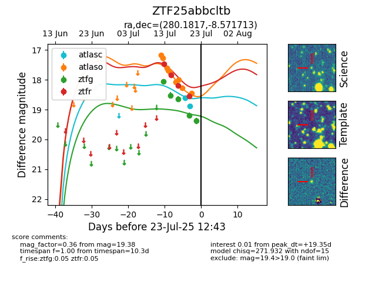

Target ZTF25abbcltb at 2025-07-23 12:43, see:
FINK: fink-portal.org/ZTF25abbcltb
Lasair: lasair-ztf.lsst.ac.uk/objects/ZTF25abbcltb
ALeRCE: alerce.online/object/ZTF25abbcltb
alt names
ZTF25abbcltb (ztf,fink)
coordinates:
equatorial (ra, dec) = (280.1817,-8.57171)
galactic (l, b) = (24.0864,-1.53843)
photometry
last atlasc=18.89, atlaso=18.45, ztfg=19.38, ztfr=18.54
2 atlasc, 9 atlaso, 5 ztfg, 4 ztfr detections
